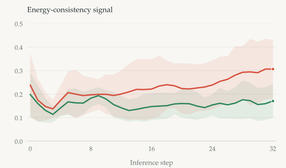
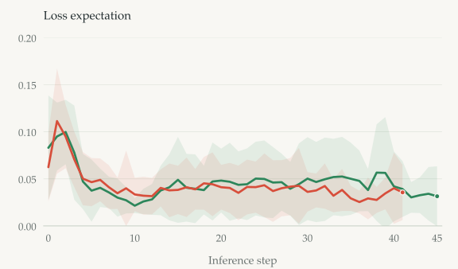

Refine the action.
Optimize an action chunk using the learned energy gradient. Execute a short prefix, then replan from the next observation.
xk+1 = xk + ηk ∇xEθ(xk, z)
A robot should know how to act, when to ask for help, and how to learn from it.

Long-term robot autonomy depends on more than effective action generation: a policy must recognize when its behavior is no longer sufficiently supported and use assistance to improve. We introduce Equilibrium Energy Control (EqC), a framework for introspective lifelong robot learning built around an explicit conditional energy landscape. EqC casts generative action refinement as equilibrium-seeking optimization, while the geometry of the refinement process reveals whether the generated behavior remains consistent with the learned landscape. This competence signal enables Energy-Gated DAgger, where persistent energy-consistency violations trigger expert takeover and the resulting recovery trajectories are aggregated for subsequent policy updates. EqC integrates naturally into both Diffusion Transformer policies and flow-matching-based vision-language-action (VLA) policies. Across simulation and real-world bimanual manipulation, EqC matches or improves control performance and robustness while enabling timely intervention near the policy's competence boundary. A real-world study further shows how these interventions progressively expand the range of situations handled autonomously, providing a practical path from static generative controllers toward self-improving robot systems.
EqC uses an explicit conditional energy landscape to generate actions, inspect their reliability, and turn timely assistance into new autonomous capabilities.
Optimize an action chunk using the learned energy gradient. Execute a short prefix, then replan from the next observation.
Measure whether energy progress agrees with the relation learned from demonstrations. Persistent violations signal a need for help.
Energy-Gated DAgger collects expert recoveries where the policy needs them, then trains on the accumulated experience.
We evaluate EqC on three bimanual manipulation tasks using an EqC-adapted Galaxea G0.5 policy, with the original G0.5 policy as the baseline. Each policy is evaluated in 20 independent trials per task with randomized object placements.
G0.5
EqC (ours)
Coordinate a brush and dustpan to collect scattered debris, then deposit it into a bin.
One illustrative EqC rollout is shown.
Across three bimanual tasks · 20 trials per task and method
We evaluate EqC with Diffusion Transformer and vision-language-action policies across four simulation benchmarks. Each chart reports the benchmark’s average success rate under its evaluation protocol.
Four task suites
EqC: multi-seed mean. Baselines: published results.
Five evaluation tracks
Results grouped by π₀.₅ and π₀ backbones.
Five tasks · two difficulty settings
Average success over five tasks, shown separately for each difficulty.
Seven perturbation families
Overall robustness aggregate, as reported in the paper.
Task-level scores, evaluation protocols, and supplementary LIBERO results are available in the full paper.
Reliable failure detection is the prerequisite for timely takeover. EqC reads inconsistency along the action-refinement trajectory, rather than relying on the final action alone.
In real-world block-stacking experiments, EqC's energy-consistency signal distinguishes successful from failed rollouts more clearly than Diff-DAgger's loss-based signal. While the Diff-DAgger traces overlap through much of the rollout, EqC shows a clearer separation between outcomes, supporting timely intervention.


Mean traces with ±1 standard deviation. Each signal is shown on its original scale. Source: paper, real-world competence-awareness evaluation.
When persistent energy-consistency violations trigger an alarm, EqC pauses autonomous execution so that an expert can complete the task, and the resulting recovery trajectory becomes training data for the next policy update.
Starting from 18 seed demonstrations, targeted recovery expands the dataset to 48 episodes and improves autonomous block stacking.
Means over 3 independent runs.
20 autonomous evaluation trials per checkpoint, per run.
Matched data and training budgets across methods.
After initialization and expert preparation, EqC and an Astra-powered robot agent form a fully automated intervention-and-learning pipeline.
The prepared agent adapts its script to the intervention state. Execution shown at 4× speed.
Proof-of-concept garment-folding experiment; separate from the three-run lifelong learning evaluation.
Astra is prepared using the same 18 demonstrations that train the initial garment-folding policy. Through full-task and takeover practice, it consolidates spatial reasoning and manipulation experience into reusable skills and control code.
Once preparation is complete, the framework provides a fully automated loop of failure detection, expert recovery, and policy learning. When EqC signals that assistance is needed and pauses execution, Astra adapts its prepared code to the current scene and executes a recovery script to complete the task. The resulting demonstrations are then used to update the compact EqC policy, enabling it to learn from the larger model's recovery experience and improve its autonomous execution.
Fit a script, practice on the robot, reflect, and consolidate reusable skills.
Observe the intermediate state and execute a recovery using the prepared skills.
Train EqC on the recovery data, bringing the large model's capabilities into autonomous control.
Moving from blocks to cups reveals new competence gaps and interference with a previously learned skill. Targeted recovery on both tasks restores block-stacking performance while enabling autonomous cup stacking.
The policy has already learned hierarchical block stacking: Run 1, Round 5, trained on 48 block demonstrations.
Hierarchical block stacking → Hierarchical cup stacking
A trained block-stacking policy meets the cup task.
Blocks already mastered; no cup demonstrations yet.
Add 6 cup-stacking recovery demonstrations.
Cup stacking improves, but the prior block skill regresses.
Add 6 cup recoveries and 6 block recoveries.
The same policy now performs both tasks autonomously.
A sequential task-shift study, separate from the three-run lifelong learning evaluation.
From static policies to growing competence.
@misc{yang2026eqc,
title={{EqC}: Equilibrium Energy Control for Introspective Lifelong Robot Learning},
author={Haodong Yang and Runhan Huang and Bowen Zhang and Iofai Lei and
Zunzhe Zhang and Xiangcheng Zhang and Shaoting Zhu and Linzhan Mou and
Yicheng Liu and Hang Zhao},
year={2026},
eprint={2610.18790},
archivePrefix={arXiv},
primaryClass={cs.RO},
url={https://arxiv.org/abs/2610.18790}
}